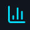

Dashboard
Main control panel
Analytics
Visual data insights
AI Predictions
7-day forecasts
Performance
Key metrics

Visual Analytics Dashboard
Comprehensive visual analysis of your power generation system performance